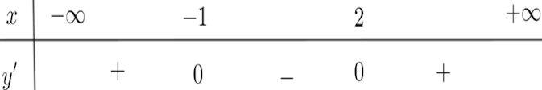
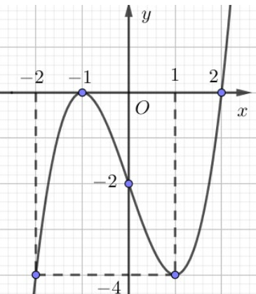
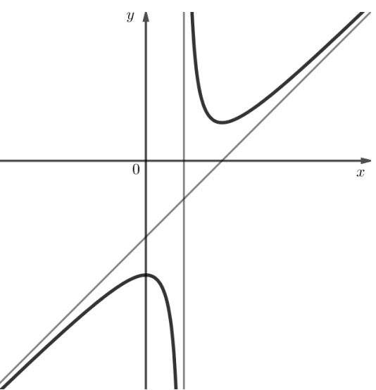
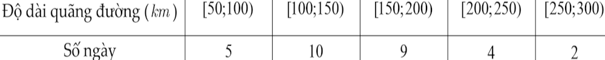
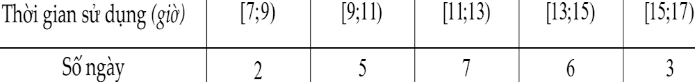
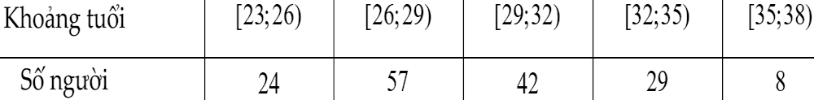
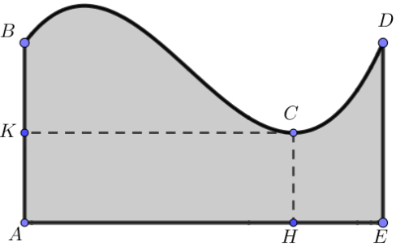

90 phút | 22 Câu
Câu 1: Cho hàm số $y=f(x)$ có bảng xét dấu đạo hàm $y'$ có bảng xét dấu đạo hàm như hình vẽ bên dưới. Hàm số nghịch biến trên khoảng nào?

Câu 2: Cho hàm số $f(x)$ liên tục trên $\mathbb{R}$ và liên tục trên và có đồ thị như hình vẽ bên. Hàm số đạt cực tiểu tại:

Câu 3: Tâm đối xứng của đồ thị hàm số $y = \frac{x-2}{2x+3}$ là:
Câu 4: Đường tiệm cận đứng của đồ thị hàm số $y = \frac{x^2+x+2}{x+2}$ là:
Câu 5: Trong không gian $Oxyz$, điểm nào thuộc mặt phẳng $(Oxy)$?
Câu 6: Tọa độ điểm $M$ biết $\vec{OM} = 3\vec{i} + \vec{j} - 2\vec{k}$:
Câu 7: Cho $\vec{a}=(2; -3; 1), \vec{b}=(0; 4; -2)$. Tính $\vec{v} = \vec{a} - \vec{b}$:
Câu 8: Biết đường cong đậm nét trong hình vẽ bên là đồ thị của một trong bốn hàm số dưới đây. Hàm số đó là:

Câu 9: Trung điểm $I$ của $A(3; 2; 1), B(5; 0; -1)$ là:
Câu 10: Cho hình hộp chữ nhật có $AB=1, AD=2, AA'=3$. Tính $|\vec{AB} + \vec{AD} + \vec{AA'}|$:
Câu 11:Một bác tài xế thống kê lại độ dài quãng đường (đơn vị: km) mà bác đã lái xe mỗi ngày trong một tháng ở bảng sau. Khoảng biến thiên của mẫu số liệu ghép nhóm trên bằng:

Câu 12:Để kiểm tra thời gian (đơn vị: giờ) sử dụng pin của chiếc điện thoại mới, người ta thống kê thời gian sử dụng điện thoại liên tục từ lúc sạc đầy pin cho đến khi hết pin ở bảng sau. Độ lệch chuẩn của mẫu số liệu ghép nhóm trên (làm tròn kết quả đến hàng phần trăm) bằng

Câu 13: Lợi nhuận mỗi ngày của một xưởng khi sản xuất x (kg) một loại sản phẩm được cho bởi hàm số $L(x) = -x^3 + 24x^2 + 780x - 5000$ ($0 \le x \le 40$). Biết công suất tối đa của xưởng là 40. kg sản phẩm trong một ngày. Giả sử mỗi ngày xưởng sản xuất x (kg) sản phẩm và bán hết.
Câu 14: Hình chóp $S.ABCD$ có đáy $ABCD$ là hình chữ nhật. Biết $SA=6, AB=3, AD=6, SA \perp (ABCD)$. Điểm G là trọng tâm của tam giác SBD. Chọn hệ trục tọa độ $Oxyz$ có gốc tọa độ O trùng với A, các điểm B D S lần lượt nằm trên các tia $Ox, Oy, Oz$ và các vectơ đơn vị trên các trục tọa độ có độ dài bằng 1.
Câu 15: Cho $A(1; -4; 2), B(2; 1; -3), C(-1; 2; -2)$:
Câu 16: Hàm số $y = \frac{x^2 - x - 1}{x + 1}$:
Câu 17: TCX của $y = \frac{2x^2+2x-11}{x-2}$ cắt $Ox, Oy$ tại $A, B$. Tính diện tích $\triangle OAB$:
Câu 18:Một công ty thống kê tuổi của các nhân viên ở bảng sau. Hãy xác định khoảng tứ phân vị của mẫu số liệu ghép nhóm trên (làm tròn kết quả đến hàng phần mười).

Câu 19:Một hồ bơi có hình dạng như phần tô đậm trong hình vẽ bên. Bờ cong của hồ là một phần của đồ thị hàm số bậc ba. Biết $AB=DE=20m$, $AE=40m$, $AH=30m$, $AK=10m$. Một vận động viên xuất phát từ một vị trí bất kỳ trên bờ cong của hồ để bơi đến bờ AE với vận tốc không đổi theo phương vuông góc với bờ AE. Trong tất cả các đường bơi này, nếu thời gian để thực hiện đường bơi ngắn nhất là 5 giây thì thời gian để thực hiện đường bơi dài nhất là bao nhiêu giây? (kết quả làm tròn đến hàng phần mười)

Câu 20: Trong không gian Oxyz (đơn vị độ dài là km). Tính tốc độ (km/h) khi máy bay đi từ $M(100;200;8)$ đến $N(210;303;12)$ trong 10 phút (làm tròn đến hàng đơn vị):
Câu 21: Nhà sản xuất sử dụng hết $24\sqrt{3}$ $dm^2$ vật liệu làm lồng đèn lăng trụ tam giác đều.Các mối ghép có kích thước không đáng kể. Tính thể tích lớn nhất ($dm^3$):
Câu 22: Tính khoảng cách từ điểm cực đại của đồ thị hàm số $y = -x^3 + 3x + 1$ đến trục hoành:
Học sinh:
Lớp:
Số câu đúng: /22 câu